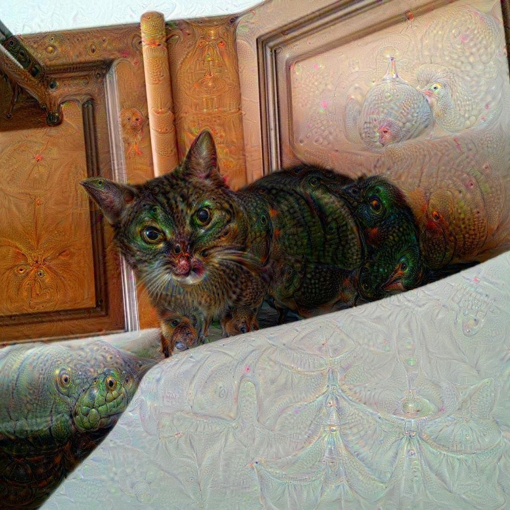
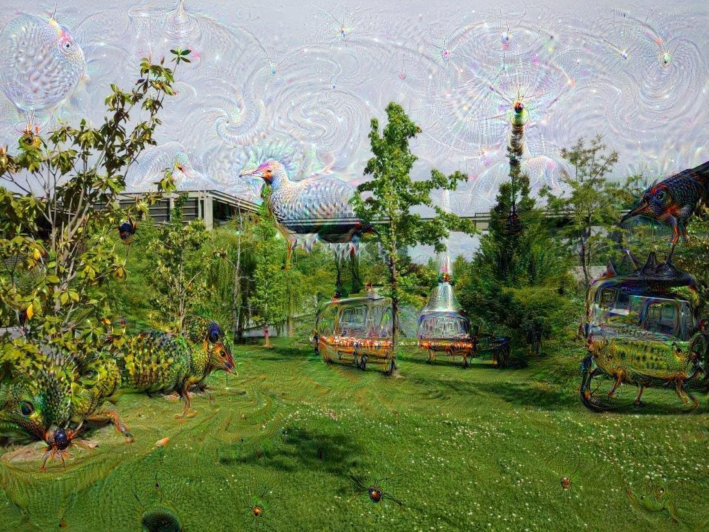

To generate awesome images applying deepdream's google algorythm.
There are several ways to achieve this, but probably the easiest is to use docker and some dockerfile that someone has already prepared.
git clone https://github.com/saturnism/deepdream-cli-docker.git
cd deepdream-cli-docker
docker build -t deepdream-cli .# view arguments
docker run deepdream-cli -h
# quick use
cat jiji.jpg | docker run -i deepdream-cli > output.jpg
# more options
cat jiji.jpg | docker run -i deepdream-cli -l conv2/norm2 -o 6 > output.jpg 